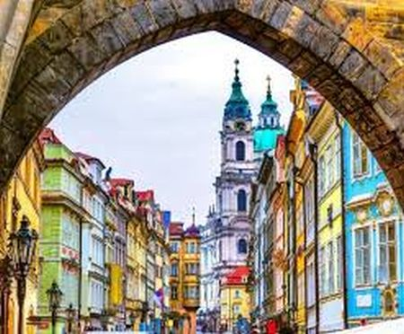

Történelméből fakadóan Prága építészeti, kulturális, vallási emlékek, látnivalók sokaságát vonultatja fel, melybe napjainkban a modern kor egy-két mementója is besorolható. A várost alkotó negyedeknek külön-külön hangulata, történelme van. Csehország fővárosa és egyben legnagyobb városa, Moldva-partján fekvő Prága mintegy 1,3 millió embernek ad otthont. A város mérsékelt óceáni éghajlattal rendelkezik, viszonylag meleg nyárral és hideg téllel. A római korban alapított és a gótikus, reneszánsz és barokk korszakban virágzó Prága a Cseh Királyság fővárosa, és több német-római császár, főként IV. Károly (1346–1378) fő rezidenciája volt.A város fontos szerepet játszott a cseh és a protestáns reformációkban, a harmincéves háborúban és a 20. századi történelemben, mint Csehszlovákia fővárosa a világháborúk és a háború utáni kommunista korszakban. Prága számos ismert kulturális látnivalónak ad otthont, amelyek közül sokan túlélték a 20. századi Európa erőszakát és pusztítását.
A fő látnivalók közé tartozik a Károly-híd | Óvárosi hídtorony | Óvárosi tér | Kisoldal | Vencel-tér | Petrin | Újvilág | Reprezentációs ház | Lőportorony | Spanyol zsinagóga | Kampa | Ferencesek kertje | Loreta | Táncoló ház | Kafka-szobor | Zizkov TV-torony | Vysehrad | Prágai Állatkert | Letná Park | Madame Tussauds | Nemzeti Technikai Múzeum.
A városban több mint tíz múzeum található, valamint számos színház, galéria, mozi és egyéb kulturális intézmények. Kiterjedt, modern tömegközlekedési rendszer köti össze a városrészeket egymással. Számos állami és magániskolának ad otthont, köztük a prágai Károly Egyetemnek, Közép-Európa legrégebbi egyetemének.
A mai Prága területén már a kőkor idejéből is találtak emberi településre utaló nyomokat, a város környékét azóta szinte folyamatosan lakják. A kelta bójok i. e. 500 körül telepedtek meg a Moldva völgyében; róluk kapta az ország a máig használatos Bohémia nevet. A mai város déli részén i. e. 200 táján állt településük maradványait találták meg. A területet i.e. 9 és 6 között a germán markomannok hódították meg, és a kelták apránként kitelepültek. A népvándorlás idején a hunok és a longobárdok átvonulása után i. sz. 500 tájt szláv népcsoportok (csehek, dudlebek, lučanok stb.) jelentek meg a térségben, de hamarosan avar, majd frank befolyás alá kerültek. A Přemysl uralkodó dinasztia i. sz. 800 körül került a cseh törzs élére. A 9. század második felében a Nagymorva Fejedelemség hódította meg a területet, majd Szvatopluk halála után (895-ben) I. Spytihněv fejedelem a német király vazallusa lett. A 10. században a Prága környékén letelepült csehek sorra legyőzték a többi szláv törzset. A róluk elnevezett országot a Přemysl-ház fejedelmei, majd királyai a mai Prága területén épített két várból, a Vyšehradból, illetve a prágai várból kormányozták.